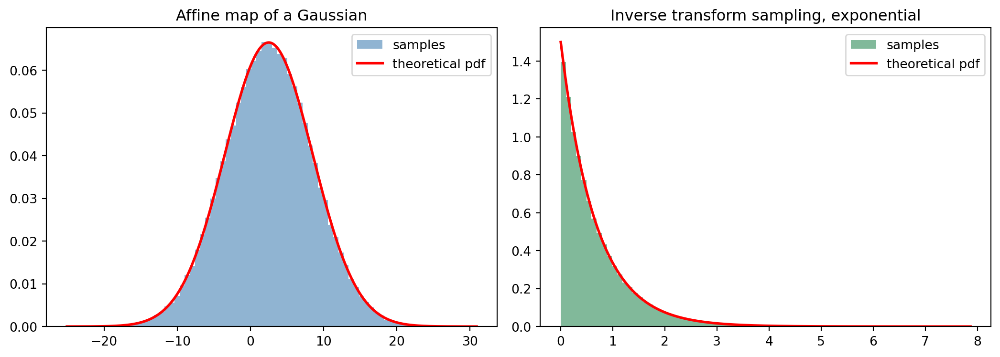

Probability theory gives machine learning its language for uncertainty. Every predictive model, from a logistic regression classifier to a transformer language model, ultimately produces or consumes probability distributions. To reason about these models with precision we need the formal machinery of random variables, the functions that describe how probability spreads across their possible values, and the rules that govern how those values move when we transform them. This chapter develops that machinery from the ground up and ties each concept to the modeling decisions that practitioners make every day.
32.1 1. Random Variables
32.1.1 1.1 From Sample Spaces to Measurable Functions
A probability model begins with a sample space \(\Omega\), the set of all outcomes of an experiment, together with a collection of events and a probability measure \(P\) that assigns a number in \([0,1]\) to each event. Working directly with raw outcomes is awkward because the outcomes themselves are often not numbers. Tossing a coin produces heads or tails, not a quantity we can average. A random variable solves this by mapping outcomes to real numbers.
Formally, a random variable \(X\) is a function \(X : \Omega \to \mathbb{R}\) that is measurable, meaning that for every threshold \(x\) the set of outcomes \(\{\omega \in \Omega : X(\omega) \le x\}\) is an event to which \(P\) assigns a probability. Measurability is the technical condition that lets us ask questions like “what is the probability that \(X\) is at most \(x\)” and always receive a well defined answer. In practice almost every function a modeler writes down is measurable, so the condition rarely intrudes, but it is the foundation that makes the rest coherent.
The notation \(P(X \le x)\) is shorthand for \(P(\{\omega : X(\omega) \le x\})\). We almost never refer to \(\Omega\) again once a random variable is defined, because the variable carries all the probabilistic information we need.
32.1.2 1.2 Discrete and Continuous Random Variables
Random variables divide into two broad types according to the set of values they can take. A discrete random variable takes values in a countable set, such as \(\{0, 1, 2, \dots\}\) or a finite list of categories encoded as integers. The number of tokens in a sentence, the class label predicted by a classifier, and the count of clicks on an advertisement are all discrete.
A continuous random variable takes values in an uncountable set, typically an interval of the real line or all of \(\mathbb{R}\). The activation of a hidden unit before a nonlinearity, the latent code in a variational autoencoder, and a measured sensor reading are continuous. The defining property is that a continuous random variable assigns zero probability to any single point, so probability accumulates only over intervals.
Some variables are neither purely discrete nor purely continuous. A rectified linear activation, for example, places a point mass at zero and spreads continuous probability over the positive reals. These mixed variables appear naturally in deep networks, and we will see how cumulative distribution functions handle them gracefully when point masses and densities coexist.
32.2 2. Distributions of Discrete Variables
32.2.1 2.1 The Probability Mass Function
For a discrete random variable \(X\) the probability mass function, or PMF, is the function \(p_X(x) = P(X = x)\). It records the probability that the variable equals each possible value. A valid PMF satisfies two conditions: it is nonnegative everywhere, \(p_X(x) \ge 0\), and it sums to one over the support,
\[\sum_{x} p_X(x) = 1.\]
The Bernoulli distribution is the simplest nontrivial example and the workhorse of binary classification. A Bernoulli variable takes value \(1\) with probability \(\theta\) and \(0\) with probability \(1 - \theta\), so \(p_X(1) = \theta\) and \(p_X(0) = 1 - \theta\). When a neural network ends in a sigmoid unit, its scalar output is exactly the parameter \(\theta\) of a Bernoulli distribution over the label, and training with binary cross entropy is maximum likelihood estimation of that \(\theta\).
The categorical distribution generalizes Bernoulli to \(K\) classes. It assigns probability \(\theta_k\) to category \(k\), with \(\sum_{k=1}^{K} \theta_k = 1\). The softmax layer at the top of a classifier or language model produces precisely these \(\theta_k\), and the cross entropy loss measures the negative log probability the model assigns to the observed category. A language model is, at each position, a categorical distribution over the vocabulary conditioned on the preceding tokens.
32.2.2 2.2 Common Discrete Families
The binomial distribution counts the number of successes in \(n\) independent Bernoulli trials, each with success probability \(\theta\). Its PMF is
The Poisson distribution models counts of rare events over a fixed interval and has PMF \(p_X(k) = \lambda^k e^{-\lambda} / k!\) for \(k = 0, 1, 2, \dots\), where \(\lambda\) is both the mean and the variance. Poisson models appear in recommendation systems for click counts and in natural language processing for word frequencies. The geometric distribution describes the number of trials until the first success and underlies certain stopping rules and reinforcement learning episode lengths.
32.3 3. Distributions of Continuous Variables
32.3.1 3.1 The Probability Density Function
A continuous random variable cannot be described by a mass function, because the probability at any single point is zero. Instead we use a probability density function, or PDF, written \(f_X(x)\). The density is not itself a probability. Rather, probabilities are obtained by integrating the density over a region:
\[P(a \le X \le b) = \int_a^b f_X(x)\, dx.\]
A valid PDF is nonnegative, \(f_X(x) \ge 0\), and integrates to one over the whole real line, \(\int_{-\infty}^{\infty} f_X(x)\, dx = 1\). The density can exceed one at individual points, which often surprises newcomers. What must stay bounded by one is the area under the curve over any interval, not the height of the curve.
The Gaussian or normal distribution is the most important continuous family in machine learning. Its density is
parameterized by a mean \(\mu\) and variance \(\sigma^2\). Gaussians describe noise models in regression, priors and posteriors in Bayesian inference, the latent space of variational autoencoders, and the weight initialization schemes of deep networks. Their analytical tractability under linear transformations and conditioning makes them ubiquitous.
32.3.2 3.2 Other Continuous Families
The uniform distribution on an interval \([a, b]\) has constant density \(1/(b - a)\) and models complete ignorance over a bounded range. It seeds random number generators and dropout masks. The exponential distribution, with density \(f_X(x) = \lambda e^{-\lambda x}\) for \(x \ge 0\), models waiting times and is the continuous analogue of the geometric distribution. The Beta distribution on \([0, 1]\) serves as a prior over probabilities, and the Dirichlet distribution generalizes it to the simplex of categorical parameters, making it central to topic models such as latent Dirichlet allocation.
32.4 4. Cumulative Distribution Functions
32.4.1 4.1 A Unified Description
The cumulative distribution function, or CDF, of any random variable is
\[F_X(x) = P(X \le x).\]
Unlike the PMF and the PDF, the CDF is defined identically for discrete, continuous, and mixed variables, which is why it provides the most general description of a distribution. Every CDF shares three properties. It is nondecreasing, since accumulating more probability cannot reduce the total. It approaches zero as \(x \to -\infty\) and one as \(x \to +\infty\). And it is right continuous, meaning the value at any point includes the probability mass sitting exactly at that point.
For a discrete variable the CDF is a step function that jumps by \(p_X(x)\) at each point \(x\) of the support and is flat in between. We can move freely between the two representations. The PMF reconstructs the CDF by accumulation, \(F_X(x) = \sum_{t \le x} p_X(t)\), and the CDF recovers the PMF as the size of each jump, \(p_X(x) = F_X(x) - F_X(x^-)\), where \(x^-\) denotes the left limit. For a continuous variable the CDF is the integral of the density, \(F_X(x) = \int_{-\infty}^{x} f_X(t)\, dt\), and by the fundamental theorem of calculus the density is recovered as its derivative,
\[f_X(x) = \frac{d}{dx} F_X(x),\]
wherever that derivative exists. These relationships are inverses of one another in the same way that summation and differencing, or integration and differentiation, are inverses. A mixed variable produces a CDF with both smooth stretches and discrete jumps, which is exactly how the rectified linear activation mentioned earlier reveals its point mass at zero: the CDF jumps upward there by an amount equal to \(P(X = 0)\).
32.4.2 4.2 Quantiles and the Inverse CDF
When the CDF is strictly increasing it has an inverse \(F_X^{-1}\), called the quantile function. The value \(F_X^{-1}(q)\) is the threshold below which a fraction \(q\) of the probability lies. The median is \(F_X^{-1}(0.5)\). Quantiles appear in calibration analysis, where we check whether a model’s predicted confidence matches its empirical accuracy, and in conformal prediction, where quantiles of a calibration score determine prediction intervals with guaranteed coverage.
The inverse CDF also drives sampling. Inverse transform sampling takes a uniform draw \(U\) on \([0, 1]\) and returns \(F_X^{-1}(U)\), which is distributed according to \(F_X\). This is one of the basic methods by which a computer turns uniform random bits into samples from an arbitrary distribution.
32.5 5. Expectation and Variance
32.5.1 5.1 Expectation
The expectation, or mean, of a random variable summarizes its central tendency as a probability weighted average. For a discrete variable,
\[\mathbb{E}[X] = \sum_x x \, p_X(x),\]
and for a continuous variable,
\[\mathbb{E}[X] = \int_{-\infty}^{\infty} x \, f_X(x)\, dx.\]
Expectation is linear, a property that is hard to overstate in its usefulness. For any constants \(a\) and \(b\) and any random variables \(X\) and \(Y\),
and this holds whether or not \(X\) and \(Y\) are independent. The proof in the discrete case is a short rearrangement of sums over the joint PMF \(p_{X,Y}\). Writing the expectation of the linear combination and splitting it,
\[\mathbb{E}[aX + bY] = \sum_x \sum_y (a x + b y)\, p_{X,Y}(x, y) = a \sum_x \sum_y x\, p_{X,Y}(x, y) + b \sum_x \sum_y y\, p_{X,Y}(x, y).\]
In the first double sum the inner sum over \(y\) marginalizes the joint PMF, \(\sum_y p_{X,Y}(x, y) = p_X(x)\), leaving \(a \sum_x x\, p_X(x) = a\,\mathbb{E}[X]\). The second term reduces to \(b\,\mathbb{E}[Y]\) in the same way. No independence assumption enters because marginalization holds for any joint distribution. The continuous case is identical with integrals in place of sums. Linearity lets us decompose the expected loss of a model into manageable pieces and is the reason that stochastic gradient descent works: the gradient computed on a random minibatch is an unbiased estimate of the full gradient, because expectation passes through the sum that defines the loss.
A closely related tool is the law of the unconscious statistician, which computes the expectation of a function \(g(X)\) without first finding the distribution of \(g(X)\):
The second form, the mean of the square minus the square of the mean, is the version most often used in computation. It follows by expanding the square inside the expectation and applying linearity. Writing \(m = \mathbb{E}[X]\) for the mean,
where \(m\) is a constant and so passes outside the expectation. The standard deviation \(\sigma = \sqrt{\operatorname{Var}(X)}\) returns the spread to the original units of the variable.
Variance is not linear. Instead, for independent variables it adds, \(\operatorname{Var}(X + Y) = \operatorname{Var}(X) + \operatorname{Var}(Y)\), and scaling a variable scales its variance by the square of the constant, \(\operatorname{Var}(aX) = a^2 \operatorname{Var}(X)\). The scaling rule follows directly from the definition, since \(\operatorname{Var}(aX) = \mathbb{E}[(aX - a m)^2] = a^2\,\mathbb{E}[(X - m)^2]\). The additivity rule comes from expanding \(\operatorname{Var}(X + Y) = \operatorname{Var}(X) + \operatorname{Var}(Y) + 2\operatorname{Cov}(X, Y)\), where the covariance \(\operatorname{Cov}(X, Y) = \mathbb{E}[(X - \mathbb{E}[X])(Y - \mathbb{E}[Y])]\) vanishes when \(X\) and \(Y\) are independent. These rules explain why averaging \(n\) independent estimates reduces variance by a factor of \(n\), the principle behind ensemble methods and minibatch averaging. They also underlie the bias variance decomposition of generalization error, which splits a model’s expected error into a squared bias term and a variance term and frames the central tradeoff in model complexity.
32.6 6. Moments
32.6.1 6.1 Higher Order Moments
The mean and variance are the first two summaries in an infinite family. The \(n\)th raw moment of \(X\) is \(\mathbb{E}[X^n]\), and the \(n\)th central moment is \(\mathbb{E}[(X - \mathbb{E}[X])^n]\). The first raw moment is the mean. The second central moment is the variance. The third standardized central moment is the skewness, which measures asymmetry: a positive skew indicates a long right tail, common in the distributions of gradients and activation magnitudes. The fourth standardized central moment is the kurtosis, which measures how heavy the tails are relative to a Gaussian. Heavy tailed gradient distributions motivate gradient clipping and robust optimizers.
32.6.2 6.2 Moment Generating and Characteristic Functions
The moment generating function \(M_X(t) = \mathbb{E}[e^{tX}]\) packages all moments at once. Expanding the exponential as a power series and taking expectations term by term shows why,
so the \(n\)th raw moment is the coefficient of \(t^n / n!\), recovered concretely by differentiating \(n\) times and evaluating at zero, \(\mathbb{E}[X^n] = M_X^{(n)}(0)\).
As a worked example, take the standard normal \(Z \sim \mathcal{N}(0, 1)\). Completing the square in the defining integral,
since the remaining integrand is a normal density that integrates to one. Differentiating, \(M_Z'(t) = t\, e^{t^2/2}\) gives \(\mathbb{E}[Z] = M_Z'(0) = 0\), and \(M_Z''(t) = (1 + t^2) e^{t^2/2}\) gives \(\mathbb{E}[Z^2] = M_Z''(0) = 1\), so \(\operatorname{Var}(Z) = 1 - 0^2 = 1\) as expected.
When it exists, the moment generating function uniquely determines the distribution and turns the convolution of independent sums into a simple product, since \(M_{X + Y}(t) = M_X(t)\, M_Y(t)\) for independent \(X\) and \(Y\), which streamlines proofs about sums of random variables. The characteristic function \(\varphi_X(t) = \mathbb{E}[e^{itX}]\) serves the same role but always exists, and it provides the cleanest route to the central limit theorem, the result that explains why Gaussian noise assumptions are so often justified when many small independent effects combine.
32.7 7. Transformations of Random Variables
32.7.1 7.1 Why Transformations Matter
Machine learning pipelines transform random variables constantly. A network applies an affine map followed by a nonlinearity, a normalizing flow composes many invertible maps, and feature engineering rescales and warps inputs. To reason about the distribution that emerges, we need rules for how a density changes when its variable is transformed.
32.7.2 7.2 The Change of Variables Formula
Suppose \(Y = g(X)\) where \(g\) is a differentiable and strictly monotonic function with inverse \(g^{-1}\). The density of \(Y\) is
The derivative factor is the Jacobian term. It accounts for how the transformation stretches or compresses regions of space, redistributing probability so that the total still integrates to one. Intuitively, where the map expands an interval the density thins out, and where it compresses an interval the density piles up. The formula itself follows from differentiating the CDF. For an increasing \(g\) we have \(F_Y(y) = P(g(X) \le y) = P(X \le g^{-1}(y)) = F_X(g^{-1}(y))\), and differentiating both sides with the chain rule gives \(f_Y(y) = f_X(g^{-1}(y))\, \frac{d}{dy} g^{-1}(y)\). A decreasing \(g\) flips the inequality and introduces a minus sign, which the absolute value absorbs, yielding the formula as stated for any strictly monotonic \(g\).
As a worked example, let \(X\) be uniform on \([0, 1]\) and \(Y = -\log(1 - X) / \lambda\), the inverse transform sampler for the exponential distribution. The inverse map is \(g^{-1}(y) = 1 - e^{-\lambda y}\) with derivative \(\frac{d}{dy} g^{-1}(y) = \lambda e^{-\lambda y}\). Since \(f_X = 1\) on the unit interval, the formula yields \(f_Y(y) = 1 \cdot \lambda e^{-\lambda y} = \lambda e^{-\lambda y}\) for \(y \ge 0\), exactly the exponential density. This is why feeding uniform draws through the inverse CDF produces correctly distributed samples, a fact the code below confirms empirically.
In several dimensions the absolute derivative becomes the absolute value of the Jacobian determinant of the inverse map. This multivariate change of variables formula is the mathematical engine of normalizing flows, a class of generative models that build a complex distribution by pushing a simple Gaussian through a sequence of invertible transformations. The log density of a generated sample is computed by summing the log absolute Jacobian determinants of each layer, and architectures such as coupling layers are designed precisely so that this determinant is cheap to evaluate.
32.7.3 7.3 Expectations Under Transformation and the Reparameterization Trick
Often we do not need the full transformed density and only want an expectation under it. The law of the unconscious statistician handles this directly, letting us average \(g(X)\) against the distribution of \(X\) without deriving the distribution of \(Y\).
This idea powers the reparameterization trick at the heart of the variational autoencoder. Sampling a latent variable \(z\) from a Gaussian with mean \(\mu\) and standard deviation \(\sigma\) blocks gradients from flowing into \(\mu\) and \(\sigma\), because the sampling operation is not differentiable. We rewrite the sample as \(z = \mu + \sigma \cdot \epsilon\) where \(\epsilon\) is a standard normal draw that carries no parameters. Now \(z\) is a deterministic differentiable transformation of \(\mu\) and \(\sigma\), and a Monte Carlo estimate of an expectation over \(z\) becomes an expectation over the fixed distribution of \(\epsilon\). Gradients pass straight through the transformation, which is what makes end to end training of latent variable models possible.
32.7.4 7.4 Affine Transformations and Standardization
The most common transformation in practice is affine, \(Y = aX + b\). Its mean and variance follow simple rules: \(\mathbb{E}[Y] = a\,\mathbb{E}[X] + b\) and \(\operatorname{Var}(Y) = a^2 \operatorname{Var}(X)\). Standardizing a feature subtracts its mean and divides by its standard deviation, producing a variable with mean zero and variance one. Batch normalization and layer normalization apply exactly this affine standardization inside networks, then add learnable scale and shift parameters so the network can recover any mean and variance it needs. The reason these techniques stabilize training traces directly back to how affine maps reshape the first two moments of a distribution.
32.8 8. Worked Implementation
The following self-contained example ties the theory together. It draws samples from a Gaussian, applies the affine map \(Y = aX + b\), and checks that the empirical mean and variance match the rules \(\mathbb{E}[Y] = a\mu + b\) and \(\operatorname{Var}(Y) = a^2 \sigma^2\). It then uses inverse transform sampling to generate exponential variates from uniform draws, confirming the change of variables result derived above, and overlays each theoretical density on its sample histogram.
import numpy as npimport matplotlib.pyplot as pltfrom scipy import statsrng = np.random.default_rng(0)# Affine transform of a Gaussian: Y = aX + bmu, sigma =1.0, 2.0a, b =3.0, -0.5n =200_000x = rng.normal(mu, sigma, size=n)y = a * x + bemp_mean, emp_var = y.mean(), y.var()th_mean, th_var = a * mu + b, (a **2) * sigma **2print(f"Y = aX + b empirical mean {emp_mean:.4f} theory {th_mean:.4f}")print(f"Y = aX + b empirical var {emp_var:.4f} theory {th_var:.4f}")grid = np.linspace(y.min(), y.max(), 400)pdf = stats.norm.pdf(grid, loc=th_mean, scale=np.sqrt(th_var))# Exponential via inverse transform sampling: Y = -log(1 - U) / lambdalam =1.5u = rng.uniform(size=n)expo =-np.log(1.0- u) / lamprint(f"Exp via inverse CDF mean {expo.mean():.4f} theory {1/lam:.4f}")print(f"Exp via inverse CDF var {expo.var():.4f} theory {1/lam**2:.4f}")fig, ax = plt.subplots(1, 2, figsize=(11, 4))ax[0].hist(y, bins=80, density=True, alpha=0.6, color="steelblue", label="samples")ax[0].plot(grid, pdf, "r-", lw=2, label="theoretical pdf")ax[0].set_title("Affine map of a Gaussian")ax[0].legend()xs = np.linspace(0, expo.max(), 400)ax[1].hist(expo, bins=80, density=True, alpha=0.6, color="seagreen", label="samples")ax[1].plot(xs, lam * np.exp(-lam * xs), "r-", lw=2, label="theoretical pdf")ax[1].set_title("Inverse transform sampling, exponential")ax[1].legend()fig.tight_layout()plt.show()
Y = aX + b empirical mean 2.5008 theory 2.5000
Y = aX + b empirical var 36.0864 theory 36.0000
Exp via inverse CDF mean 0.6691 theory 0.6667
Exp via inverse CDF var 0.4507 theory 0.4444

usingRandom, Statistics, Distributionsrng =MersenneTwister(0)mu, sigma =1.0, 2.0a, b =3.0, -0.5n =200_000x =rand(rng, Normal(mu, sigma), n)y = a .* x .+ bprintln("empirical mean ", mean(y), " theory ", a * mu + b)println("empirical var ", var(y), " theory ", a^2* sigma^2)# Exponential via inverse transform samplinglam =1.5u =rand(rng, n)expo =-log.(1.- u) ./ lamprintln("exp mean ", mean(expo), " theory ", 1/ lam)println("exp var ", var(expo), " theory ", 1/ lam^2)
// Cargo.toml: rand = "0.8", rand_distr = "0.4"userand::SeedableRng;userand::rngs::StdRng;userand_distr::{Distribution, Normal};fn main() {letmut rng =StdRng::seed_from_u64(0);let (mu, sigma) = (1.0_f64,2.0_f64);let (a, b) = (3.0_f64,-0.5_f64);let n =200_000usize;let normal =Normal::new(mu, sigma).unwrap();let y:Vec<f64>= (0..n).map(|_| a * normal.sample(&mut rng) + b).collect();let mean = y.iter().sum::<f64>() / n asf64;let var = y.iter().map(|v| (v - mean).powi(2)).sum::<f64>() / n asf64;println!("empirical mean {:.4} theory {:.4}", mean, a * mu + b);println!("empirical var {:.4} theory {:.4}", var, a * a * sigma * sigma);// Exponential via inverse transform samplinglet lam =1.5_f64;let expo:Vec<f64>= (0..n).map(|_|{let u:f64= rng.gen::<f64>();-(1.0- u).ln() / lam}).collect();let em = expo.iter().sum::<f64>() / n asf64;println!("exp mean {:.4} theory {:.4}", em,1.0/ lam);}
The Python output prints empirical means and variances within a fraction of a percent of their theoretical targets, and the overlaid densities sit cleanly on top of the histograms, a visual confirmation that the moment rules and the change of variables formula hold in practice.
32.9 9. Conclusion
Random variables convert messy outcomes into numbers we can manipulate. Mass functions, density functions, and the unifying cumulative distribution function describe how probability spreads across those numbers. Expectation and variance, together with the higher moments, compress a distribution into interpretable summaries, and the moment generating and characteristic functions encode the whole distribution when we need it. Transformations, governed by the change of variables formula and exploited through the reparameterization trick, let probability flow through the deterministic computations that make up modern models. These ideas are not background mathematics that a practitioner can set aside. They are the operating principles of every loss function, every generative model, and every uncertainty estimate that machine learning produces.
32.10 References
Wasserman, L. (2004). All of Statistics: A Concise Course in Statistical Inference. Springer. https://doi.org/10.1007/978-0-387-21736-9
Blitzstein, J. K., and Hwang, J. (2019). Introduction to Probability, 2nd edition. Chapman and Hall/CRC. https://doi.org/10.1201/9780429428357
Kingma, D. P., and Welling, M. (2014). Auto-Encoding Variational Bayes. International Conference on Learning Representations. https://doi.org/10.48550/arXiv.1312.6114
Rezende, D. J., and Mohamed, S. (2015). Variational Inference with Normalizing Flows. International Conference on Machine Learning, 1530 to 1538. https://doi.org/10.48550/arXiv.1505.05770
Papamakarios, G., Nalisnick, E., Rezende, D. J., Mohamed, S., and Lakshminarayanan, B. (2021). Normalizing Flows for Probabilistic Modeling and Inference. Journal of Machine Learning Research, 22(57), 1 to 64. https://doi.org/10.48550/arXiv.1912.02762
Virtanen, P., et al. (2020). SciPy 1.0: Fundamental Algorithms for Scientific Computing in Python. Nature Methods, 17, 261 to 272. https://doi.org/10.1038/s41592-019-0686-2
Harris, C. R., et al. (2020). Array Programming with NumPy. Nature, 585, 357 to 362. https://doi.org/10.1038/s41586-020-2649-2
Casella, G., and Berger, R. L. (2002). Statistical Inference, 2nd edition. Duxbury Press. https://www.cengage.com/c/statistical-inference-2e-casella-berger/
Source Code
# Random Variables and DistributionsProbability theory gives machine learning its language for uncertainty. Every predictive model, from a logistic regression classifier to a transformer language model, ultimately produces or consumes probability distributions. To reason about these models with precision we need the formal machinery of random variables, the functions that describe how probability spreads across their possible values, and the rules that govern how those values move when we transform them. This chapter develops that machinery from the ground up and ties each concept to the modeling decisions that practitioners make every day.## 1. Random Variables### 1.1 From Sample Spaces to Measurable FunctionsA probability model begins with a sample space $\Omega$, the set of all outcomes of an experiment, together with a collection of events and a probability measure $P$ that assigns a number in $[0,1]$ to each event. Working directly with raw outcomes is awkward because the outcomes themselves are often not numbers. Tossing a coin produces heads or tails, not a quantity we can average. A random variable solves this by mapping outcomes to real numbers.Formally, a random variable $X$ is a function $X : \Omega \to \mathbb{R}$ that is measurable, meaning that for every threshold $x$ the set of outcomes $\{\omega \in \Omega : X(\omega) \le x\}$ is an event to which $P$ assigns a probability. Measurability is the technical condition that lets us ask questions like "what is the probability that $X$ is at most $x$" and always receive a well defined answer. In practice almost every function a modeler writes down is measurable, so the condition rarely intrudes, but it is the foundation that makes the rest coherent.The notation $P(X \le x)$ is shorthand for $P(\{\omega : X(\omega) \le x\})$. We almost never refer to $\Omega$ again once a random variable is defined, because the variable carries all the probabilistic information we need.### 1.2 Discrete and Continuous Random VariablesRandom variables divide into two broad types according to the set of values they can take. A discrete random variable takes values in a countable set, such as $\{0, 1, 2, \dots\}$ or a finite list of categories encoded as integers. The number of tokens in a sentence, the class label predicted by a classifier, and the count of clicks on an advertisement are all discrete.A continuous random variable takes values in an uncountable set, typically an interval of the real line or all of $\mathbb{R}$. The activation of a hidden unit before a nonlinearity, the latent code in a variational autoencoder, and a measured sensor reading are continuous. The defining property is that a continuous random variable assigns zero probability to any single point, so probability accumulates only over intervals.Some variables are neither purely discrete nor purely continuous. A rectified linear activation, for example, places a point mass at zero and spreads continuous probability over the positive reals. These mixed variables appear naturally in deep networks, and we will see how cumulative distribution functions handle them gracefully when point masses and densities coexist.## 2. Distributions of Discrete Variables### 2.1 The Probability Mass FunctionFor a discrete random variable $X$ the probability mass function, or PMF, is the function $p_X(x) = P(X = x)$. It records the probability that the variable equals each possible value. A valid PMF satisfies two conditions: it is nonnegative everywhere, $p_X(x) \ge 0$, and it sums to one over the support,$$\sum_{x} p_X(x) = 1.$$The Bernoulli distribution is the simplest nontrivial example and the workhorse of binary classification. A Bernoulli variable takes value $1$ with probability $\theta$ and $0$ with probability $1 - \theta$, so $p_X(1) = \theta$ and $p_X(0) = 1 - \theta$. When a neural network ends in a sigmoid unit, its scalar output is exactly the parameter $\theta$ of a Bernoulli distribution over the label, and training with binary cross entropy is maximum likelihood estimation of that $\theta$.The categorical distribution generalizes Bernoulli to $K$ classes. It assigns probability $\theta_k$ to category $k$, with $\sum_{k=1}^{K} \theta_k = 1$. The softmax layer at the top of a classifier or language model produces precisely these $\theta_k$, and the cross entropy loss measures the negative log probability the model assigns to the observed category. A language model is, at each position, a categorical distribution over the vocabulary conditioned on the preceding tokens.### 2.2 Common Discrete FamiliesThe binomial distribution counts the number of successes in $n$ independent Bernoulli trials, each with success probability $\theta$. Its PMF is$$p_X(k) = \binom{n}{k} \theta^k (1 - \theta)^{n - k}, \qquad k = 0, 1, \dots, n.$$The Poisson distribution models counts of rare events over a fixed interval and has PMF $p_X(k) = \lambda^k e^{-\lambda} / k!$ for $k = 0, 1, 2, \dots$, where $\lambda$ is both the mean and the variance. Poisson models appear in recommendation systems for click counts and in natural language processing for word frequencies. The geometric distribution describes the number of trials until the first success and underlies certain stopping rules and reinforcement learning episode lengths.## 3. Distributions of Continuous Variables### 3.1 The Probability Density FunctionA continuous random variable cannot be described by a mass function, because the probability at any single point is zero. Instead we use a probability density function, or PDF, written $f_X(x)$. The density is not itself a probability. Rather, probabilities are obtained by integrating the density over a region:$$P(a \le X \le b) = \int_a^b f_X(x)\, dx.$$A valid PDF is nonnegative, $f_X(x) \ge 0$, and integrates to one over the whole real line, $\int_{-\infty}^{\infty} f_X(x)\, dx = 1$. The density can exceed one at individual points, which often surprises newcomers. What must stay bounded by one is the area under the curve over any interval, not the height of the curve.The Gaussian or normal distribution is the most important continuous family in machine learning. Its density is$$f_X(x) = \frac{1}{\sqrt{2\pi\sigma^2}} \exp\!\left(-\frac{(x - \mu)^2}{2\sigma^2}\right),$$parameterized by a mean $\mu$ and variance $\sigma^2$. Gaussians describe noise models in regression, priors and posteriors in Bayesian inference, the latent space of variational autoencoders, and the weight initialization schemes of deep networks. Their analytical tractability under linear transformations and conditioning makes them ubiquitous.### 3.2 Other Continuous FamiliesThe uniform distribution on an interval $[a, b]$ has constant density $1/(b - a)$ and models complete ignorance over a bounded range. It seeds random number generators and dropout masks. The exponential distribution, with density $f_X(x) = \lambda e^{-\lambda x}$ for $x \ge 0$, models waiting times and is the continuous analogue of the geometric distribution. The Beta distribution on $[0, 1]$ serves as a prior over probabilities, and the Dirichlet distribution generalizes it to the simplex of categorical parameters, making it central to topic models such as latent Dirichlet allocation.## 4. Cumulative Distribution Functions### 4.1 A Unified DescriptionThe cumulative distribution function, or CDF, of any random variable is$$F_X(x) = P(X \le x).$$Unlike the PMF and the PDF, the CDF is defined identically for discrete, continuous, and mixed variables, which is why it provides the most general description of a distribution. Every CDF shares three properties. It is nondecreasing, since accumulating more probability cannot reduce the total. It approaches zero as $x \to -\infty$ and one as $x \to +\infty$. And it is right continuous, meaning the value at any point includes the probability mass sitting exactly at that point.For a discrete variable the CDF is a step function that jumps by $p_X(x)$ at each point $x$ of the support and is flat in between. We can move freely between the two representations. The PMF reconstructs the CDF by accumulation, $F_X(x) = \sum_{t \le x} p_X(t)$, and the CDF recovers the PMF as the size of each jump, $p_X(x) = F_X(x) - F_X(x^-)$, where $x^-$ denotes the left limit. For a continuous variable the CDF is the integral of the density, $F_X(x) = \int_{-\infty}^{x} f_X(t)\, dt$, and by the fundamental theorem of calculus the density is recovered as its derivative,$$f_X(x) = \frac{d}{dx} F_X(x),$$wherever that derivative exists. These relationships are inverses of one another in the same way that summation and differencing, or integration and differentiation, are inverses. A mixed variable produces a CDF with both smooth stretches and discrete jumps, which is exactly how the rectified linear activation mentioned earlier reveals its point mass at zero: the CDF jumps upward there by an amount equal to $P(X = 0)$.### 4.2 Quantiles and the Inverse CDFWhen the CDF is strictly increasing it has an inverse $F_X^{-1}$, called the quantile function. The value $F_X^{-1}(q)$ is the threshold below which a fraction $q$ of the probability lies. The median is $F_X^{-1}(0.5)$. Quantiles appear in calibration analysis, where we check whether a model's predicted confidence matches its empirical accuracy, and in conformal prediction, where quantiles of a calibration score determine prediction intervals with guaranteed coverage.The inverse CDF also drives sampling. Inverse transform sampling takes a uniform draw $U$ on $[0, 1]$ and returns $F_X^{-1}(U)$, which is distributed according to $F_X$. This is one of the basic methods by which a computer turns uniform random bits into samples from an arbitrary distribution.## 5. Expectation and Variance### 5.1 ExpectationThe expectation, or mean, of a random variable summarizes its central tendency as a probability weighted average. For a discrete variable,$$\mathbb{E}[X] = \sum_x x \, p_X(x),$$and for a continuous variable,$$\mathbb{E}[X] = \int_{-\infty}^{\infty} x \, f_X(x)\, dx.$$Expectation is linear, a property that is hard to overstate in its usefulness. For any constants $a$ and $b$ and any random variables $X$ and $Y$,$$\mathbb{E}[aX + bY] = a\,\mathbb{E}[X] + b\,\mathbb{E}[Y],$$and this holds whether or not $X$ and $Y$ are independent. The proof in the discrete case is a short rearrangement of sums over the joint PMF $p_{X,Y}$. Writing the expectation of the linear combination and splitting it,$$\mathbb{E}[aX + bY] = \sum_x \sum_y (a x + b y)\, p_{X,Y}(x, y) = a \sum_x \sum_y x\, p_{X,Y}(x, y) + b \sum_x \sum_y y\, p_{X,Y}(x, y).$$In the first double sum the inner sum over $y$ marginalizes the joint PMF, $\sum_y p_{X,Y}(x, y) = p_X(x)$, leaving $a \sum_x x\, p_X(x) = a\,\mathbb{E}[X]$. The second term reduces to $b\,\mathbb{E}[Y]$ in the same way. No independence assumption enters because marginalization holds for any joint distribution. The continuous case is identical with integrals in place of sums. Linearity lets us decompose the expected loss of a model into manageable pieces and is the reason that stochastic gradient descent works: the gradient computed on a random minibatch is an unbiased estimate of the full gradient, because expectation passes through the sum that defines the loss.A closely related tool is the law of the unconscious statistician, which computes the expectation of a function $g(X)$ without first finding the distribution of $g(X)$:$$\mathbb{E}[g(X)] = \sum_x g(x)\, p_X(x) \quad \text{or} \quad \int_{-\infty}^{\infty} g(x)\, f_X(x)\, dx.$$This is the formula behind expected risk minimization, where $g$ is the loss function and the expectation is over the data distribution.### 5.2 Variance and Standard DeviationVariance measures how widely a variable spreads around its mean. It is the expected squared deviation,$$\operatorname{Var}(X) = \mathbb{E}\!\left[(X - \mathbb{E}[X])^2\right] = \mathbb{E}[X^2] - (\mathbb{E}[X])^2.$$The second form, the mean of the square minus the square of the mean, is the version most often used in computation. It follows by expanding the square inside the expectation and applying linearity. Writing $m = \mathbb{E}[X]$ for the mean,$$\mathbb{E}\!\left[(X - m)^2\right] = \mathbb{E}\!\left[X^2 - 2 m X + m^2\right] = \mathbb{E}[X^2] - 2 m\,\mathbb{E}[X] + m^2 = \mathbb{E}[X^2] - 2 m^2 + m^2 = \mathbb{E}[X^2] - m^2,$$where $m$ is a constant and so passes outside the expectation. The standard deviation $\sigma = \sqrt{\operatorname{Var}(X)}$ returns the spread to the original units of the variable.Variance is not linear. Instead, for independent variables it adds, $\operatorname{Var}(X + Y) = \operatorname{Var}(X) + \operatorname{Var}(Y)$, and scaling a variable scales its variance by the square of the constant, $\operatorname{Var}(aX) = a^2 \operatorname{Var}(X)$. The scaling rule follows directly from the definition, since $\operatorname{Var}(aX) = \mathbb{E}[(aX - a m)^2] = a^2\,\mathbb{E}[(X - m)^2]$. The additivity rule comes from expanding $\operatorname{Var}(X + Y) = \operatorname{Var}(X) + \operatorname{Var}(Y) + 2\operatorname{Cov}(X, Y)$, where the covariance $\operatorname{Cov}(X, Y) = \mathbb{E}[(X - \mathbb{E}[X])(Y - \mathbb{E}[Y])]$ vanishes when $X$ and $Y$ are independent. These rules explain why averaging $n$ independent estimates reduces variance by a factor of $n$, the principle behind ensemble methods and minibatch averaging. They also underlie the bias variance decomposition of generalization error, which splits a model's expected error into a squared bias term and a variance term and frames the central tradeoff in model complexity.## 6. Moments### 6.1 Higher Order MomentsThe mean and variance are the first two summaries in an infinite family. The $n$th raw moment of $X$ is $\mathbb{E}[X^n]$, and the $n$th central moment is $\mathbb{E}[(X - \mathbb{E}[X])^n]$. The first raw moment is the mean. The second central moment is the variance. The third standardized central moment is the skewness, which measures asymmetry: a positive skew indicates a long right tail, common in the distributions of gradients and activation magnitudes. The fourth standardized central moment is the kurtosis, which measures how heavy the tails are relative to a Gaussian. Heavy tailed gradient distributions motivate gradient clipping and robust optimizers.### 6.2 Moment Generating and Characteristic FunctionsThe moment generating function $M_X(t) = \mathbb{E}[e^{tX}]$ packages all moments at once. Expanding the exponential as a power series and taking expectations term by term shows why,$$M_X(t) = \mathbb{E}\!\left[\sum_{n=0}^{\infty} \frac{(tX)^n}{n!}\right] = \sum_{n=0}^{\infty} \frac{t^n}{n!}\,\mathbb{E}[X^n],$$so the $n$th raw moment is the coefficient of $t^n / n!$, recovered concretely by differentiating $n$ times and evaluating at zero, $\mathbb{E}[X^n] = M_X^{(n)}(0)$.As a worked example, take the standard normal $Z \sim \mathcal{N}(0, 1)$. Completing the square in the defining integral,$$M_Z(t) = \int_{-\infty}^{\infty} e^{tz} \frac{1}{\sqrt{2\pi}} e^{-z^2/2}\, dz = e^{t^2/2} \int_{-\infty}^{\infty} \frac{1}{\sqrt{2\pi}} e^{-(z - t)^2/2}\, dz = e^{t^2/2},$$since the remaining integrand is a normal density that integrates to one. Differentiating, $M_Z'(t) = t\, e^{t^2/2}$ gives $\mathbb{E}[Z] = M_Z'(0) = 0$, and $M_Z''(t) = (1 + t^2) e^{t^2/2}$ gives $\mathbb{E}[Z^2] = M_Z''(0) = 1$, so $\operatorname{Var}(Z) = 1 - 0^2 = 1$ as expected.When it exists, the moment generating function uniquely determines the distribution and turns the convolution of independent sums into a simple product, since $M_{X + Y}(t) = M_X(t)\, M_Y(t)$ for independent $X$ and $Y$, which streamlines proofs about sums of random variables. The characteristic function $\varphi_X(t) = \mathbb{E}[e^{itX}]$ serves the same role but always exists, and it provides the cleanest route to the central limit theorem, the result that explains why Gaussian noise assumptions are so often justified when many small independent effects combine.## 7. Transformations of Random Variables### 7.1 Why Transformations MatterMachine learning pipelines transform random variables constantly. A network applies an affine map followed by a nonlinearity, a normalizing flow composes many invertible maps, and feature engineering rescales and warps inputs. To reason about the distribution that emerges, we need rules for how a density changes when its variable is transformed.### 7.2 The Change of Variables FormulaSuppose $Y = g(X)$ where $g$ is a differentiable and strictly monotonic function with inverse $g^{-1}$. The density of $Y$ is$$f_Y(y) = f_X\!\left(g^{-1}(y)\right) \left| \frac{d}{dy} g^{-1}(y) \right|.$$The derivative factor is the Jacobian term. It accounts for how the transformation stretches or compresses regions of space, redistributing probability so that the total still integrates to one. Intuitively, where the map expands an interval the density thins out, and where it compresses an interval the density piles up. The formula itself follows from differentiating the CDF. For an increasing $g$ we have $F_Y(y) = P(g(X) \le y) = P(X \le g^{-1}(y)) = F_X(g^{-1}(y))$, and differentiating both sides with the chain rule gives $f_Y(y) = f_X(g^{-1}(y))\, \frac{d}{dy} g^{-1}(y)$. A decreasing $g$ flips the inequality and introduces a minus sign, which the absolute value absorbs, yielding the formula as stated for any strictly monotonic $g$.As a worked example, let $X$ be uniform on $[0, 1]$ and $Y = -\log(1 - X) / \lambda$, the inverse transform sampler for the exponential distribution. The inverse map is $g^{-1}(y) = 1 - e^{-\lambda y}$ with derivative $\frac{d}{dy} g^{-1}(y) = \lambda e^{-\lambda y}$. Since $f_X = 1$ on the unit interval, the formula yields $f_Y(y) = 1 \cdot \lambda e^{-\lambda y} = \lambda e^{-\lambda y}$ for $y \ge 0$, exactly the exponential density. This is why feeding uniform draws through the inverse CDF produces correctly distributed samples, a fact the code below confirms empirically.In several dimensions the absolute derivative becomes the absolute value of the Jacobian determinant of the inverse map. This multivariate change of variables formula is the mathematical engine of normalizing flows, a class of generative models that build a complex distribution by pushing a simple Gaussian through a sequence of invertible transformations. The log density of a generated sample is computed by summing the log absolute Jacobian determinants of each layer, and architectures such as coupling layers are designed precisely so that this determinant is cheap to evaluate.### 7.3 Expectations Under Transformation and the Reparameterization TrickOften we do not need the full transformed density and only want an expectation under it. The law of the unconscious statistician handles this directly, letting us average $g(X)$ against the distribution of $X$ without deriving the distribution of $Y$.This idea powers the reparameterization trick at the heart of the variational autoencoder. Sampling a latent variable $z$ from a Gaussian with mean $\mu$ and standard deviation $\sigma$ blocks gradients from flowing into $\mu$ and $\sigma$, because the sampling operation is not differentiable. We rewrite the sample as $z = \mu + \sigma \cdot \epsilon$ where $\epsilon$ is a standard normal draw that carries no parameters. Now $z$ is a deterministic differentiable transformation of $\mu$ and $\sigma$, and a Monte Carlo estimate of an expectation over $z$ becomes an expectation over the fixed distribution of $\epsilon$. Gradients pass straight through the transformation, which is what makes end to end training of latent variable models possible.### 7.4 Affine Transformations and StandardizationThe most common transformation in practice is affine, $Y = aX + b$. Its mean and variance follow simple rules: $\mathbb{E}[Y] = a\,\mathbb{E}[X] + b$ and $\operatorname{Var}(Y) = a^2 \operatorname{Var}(X)$. Standardizing a feature subtracts its mean and divides by its standard deviation, producing a variable with mean zero and variance one. Batch normalization and layer normalization apply exactly this affine standardization inside networks, then add learnable scale and shift parameters so the network can recover any mean and variance it needs. The reason these techniques stabilize training traces directly back to how affine maps reshape the first two moments of a distribution.## 8. Worked ImplementationThe following self-contained example ties the theory together. It draws samples from a Gaussian, applies the affine map $Y = aX + b$, and checks that the empirical mean and variance match the rules $\mathbb{E}[Y] = a\mu + b$ and $\operatorname{Var}(Y) = a^2 \sigma^2$. It then uses inverse transform sampling to generate exponential variates from uniform draws, confirming the change of variables result derived above, and overlays each theoretical density on its sample histogram.::: {.panel-tabset}## Python```{python}import numpy as npimport matplotlib.pyplot as pltfrom scipy import statsrng = np.random.default_rng(0)# Affine transform of a Gaussian: Y = aX + bmu, sigma =1.0, 2.0a, b =3.0, -0.5n =200_000x = rng.normal(mu, sigma, size=n)y = a * x + bemp_mean, emp_var = y.mean(), y.var()th_mean, th_var = a * mu + b, (a **2) * sigma **2print(f"Y = aX + b empirical mean {emp_mean:.4f} theory {th_mean:.4f}")print(f"Y = aX + b empirical var {emp_var:.4f} theory {th_var:.4f}")grid = np.linspace(y.min(), y.max(), 400)pdf = stats.norm.pdf(grid, loc=th_mean, scale=np.sqrt(th_var))# Exponential via inverse transform sampling: Y = -log(1 - U) / lambdalam =1.5u = rng.uniform(size=n)expo =-np.log(1.0- u) / lamprint(f"Exp via inverse CDF mean {expo.mean():.4f} theory {1/lam:.4f}")print(f"Exp via inverse CDF var {expo.var():.4f} theory {1/lam**2:.4f}")fig, ax = plt.subplots(1, 2, figsize=(11, 4))ax[0].hist(y, bins=80, density=True, alpha=0.6, color="steelblue", label="samples")ax[0].plot(grid, pdf, "r-", lw=2, label="theoretical pdf")ax[0].set_title("Affine map of a Gaussian")ax[0].legend()xs = np.linspace(0, expo.max(), 400)ax[1].hist(expo, bins=80, density=True, alpha=0.6, color="seagreen", label="samples")ax[1].plot(xs, lam * np.exp(-lam * xs), "r-", lw=2, label="theoretical pdf")ax[1].set_title("Inverse transform sampling, exponential")ax[1].legend()fig.tight_layout()plt.show()```## Julia```juliausingRandom, Statistics, Distributionsrng =MersenneTwister(0)mu, sigma =1.0, 2.0a, b =3.0, -0.5n =200_000x =rand(rng, Normal(mu, sigma), n)y = a .* x .+ bprintln("empirical mean ", mean(y), " theory ", a * mu + b)println("empirical var ", var(y), " theory ", a^2* sigma^2)# Exponential via inverse transform samplinglam =1.5u =rand(rng, n)expo =-log.(1.- u) ./ lamprintln("exp mean ", mean(expo), " theory ", 1/ lam)println("exp var ", var(expo), " theory ", 1/ lam^2)```## Rust```rust// Cargo.toml: rand ="0.8", rand_distr ="0.4"use rand::SeedableRng;use rand::rngs::StdRng;use rand_distr::{Distribution, Normal};fn main() { let mut rng = StdRng::seed_from_u64(0);let (mu, sigma) = (1.0_f64, 2.0_f64);let (a, b) = (3.0_f64, -0.5_f64); let n =200_000usize; let normal = Normal::new(mu, sigma).unwrap(); let y: Vec<f64>= (0..n).map(|_| a *normal.sample(&mut rng) + b).collect(); let mean =y.iter().sum::<f64>() / n as f64; let var =y.iter().map(|v| (v - mean).powi(2)).sum::<f64>() / n as f64; println!("empirical mean {:.4} theory {:.4}", mean, a * mu + b); println!("empirical var {:.4} theory {:.4}", var, a * a * sigma * sigma);// Exponential via inverse transform sampling let lam =1.5_f64; let expo: Vec<f64>= (0..n).map(|_| { let u: f64 = rng.gen::<f64>();-(1.0- u).ln() / lam }).collect(); let em =expo.iter().sum::<f64>() / n as f64; println!("exp mean {:.4} theory {:.4}", em, 1.0/ lam);}```:::The Python output prints empirical means and variances within a fraction of a percent of their theoretical targets, and the overlaid densities sit cleanly on top of the histograms, a visual confirmation that the moment rules and the change of variables formula hold in practice.## 9. ConclusionRandom variables convert messy outcomes into numbers we can manipulate. Mass functions, density functions, and the unifying cumulative distribution function describe how probability spreads across those numbers. Expectation and variance, together with the higher moments, compress a distribution into interpretable summaries, and the moment generating and characteristic functions encode the whole distribution when we need it. Transformations, governed by the change of variables formula and exploited through the reparameterization trick, let probability flow through the deterministic computations that make up modern models. These ideas are not background mathematics that a practitioner can set aside. They are the operating principles of every loss function, every generative model, and every uncertainty estimate that machine learning produces.## References1. Wasserman, L. (2004). *All of Statistics: A Concise Course in Statistical Inference*. Springer. https://doi.org/10.1007/978-0-387-21736-92. Blitzstein, J. K., and Hwang, J. (2019). *Introduction to Probability*, 2nd edition. Chapman and Hall/CRC. https://doi.org/10.1201/97804294283573. Kingma, D. P., and Welling, M. (2014). Auto-Encoding Variational Bayes. *International Conference on Learning Representations*. https://doi.org/10.48550/arXiv.1312.61144. Rezende, D. J., and Mohamed, S. (2015). Variational Inference with Normalizing Flows. *International Conference on Machine Learning*, 1530 to 1538. https://doi.org/10.48550/arXiv.1505.057705. Papamakarios, G., Nalisnick, E., Rezende, D. J., Mohamed, S., and Lakshminarayanan, B. (2021). Normalizing Flows for Probabilistic Modeling and Inference. *Journal of Machine Learning Research*, 22(57), 1 to 64. https://doi.org/10.48550/arXiv.1912.027626. Virtanen, P., et al. (2020). SciPy 1.0: Fundamental Algorithms for Scientific Computing in Python. *Nature Methods*, 17, 261 to 272. https://doi.org/10.1038/s41592-019-0686-27. Harris, C. R., et al. (2020). Array Programming with NumPy. *Nature*, 585, 357 to 362. https://doi.org/10.1038/s41586-020-2649-28. Casella, G., and Berger, R. L. (2002). *Statistical Inference*, 2nd edition. Duxbury Press. https://www.cengage.com/c/statistical-inference-2e-casella-berger/